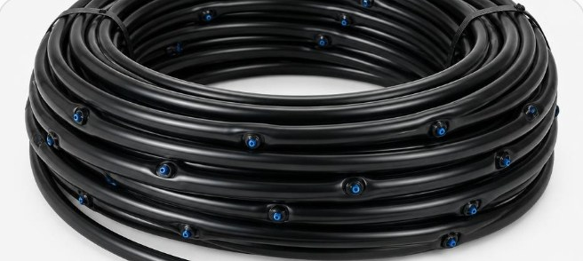

డ్రిప్ ఇరిగేషన్ (బిందు సేద్యం) గైడ్: తెలంగాణ, ఆంధ్రప్రదేశ్ రైతులకు పూర్తి సమాచారం

తెలంగాణ, ఆంధ్రప్రదేశ్ రైతులకు నీటి కొరత, కూలీల ఖర్చు, ఎరువుల భారం ఏటా పెరుగుతున్నాయి. వీటిని తగ్గించుకోవడానికి ఎక్కువ మంది రైతులు డ్రిప్ ఇరిగేషన్ (బిందు సేద్యం) వైపు వెళ్తున్నారు. ఈ వ్యాసంలో డ్రిప్ అంటే ఏమిటి, ఎలా లాభం, ఏ పంటలకు సరిపోతుంది, ప్రభుత్వ సబ్సిడీ, నిర్వహణ జాగ్రత్తలు సులభంగా తెలుసుకుందాం.
డ్రిప్ ఇరిగేషన్ అంటే ఏమిటి?
పైపుల ద్వారా నీటిని చుక్కలు చుక్కలుగా మొక్క వేర్ల దగ్గరే అందించే పద్ధతి డ్రిప్ ఇరిగేషన్. పొలం మొత్తం నీరు పారించే వరద పద్ధతిలో చాలా నీరు ఆవిరై పోతుంది, లేదా అవసరం లేని చోట పారిపోతుంది. డ్రిప్లో నీరు మొక్కకు అవసరమైన చోటికే చేరుతుంది. మెయిన్ పైపు, సబ్ మెయిన్, లేటరల్ పైపులు, డ్రిప్పర్లు, ఫిల్టర్, వాల్వ్లు ఈ వ్యవస్థలో ముఖ్య భాగాలు.
రైతుకు కలిగే లాభాలు
- నీటి ఆదా: మన దేశంలో వరద పద్ధతిలో నీటి వినియోగ సామర్థ్యం కేవలం 25 నుండి 35 శాతం మాత్రమే అని అధ్యయనాలు చెబుతున్నాయి. డ్రిప్తో నీరు చాలా వరకు మొక్కకే చేరుతుంది. అందుకే అదే నీటితో ఎక్కువ విస్తీర్ణం సాగు చేయవచ్చు.
- ఎరువు ఆదా: ఫెర్టిగేషన్ అంటే నీటితో పాటే ఎరువును డ్రిప్ ద్వారా ఇవ్వడం. నీతి ఆయోగ్ ప్రచురించిన ఒక అధ్యయనంలో డ్రిప్ వాడిన రైతులకు ఎరువు ఖర్చు సుమారు 13 నుండి 38 శాతం వరకు తగ్గినట్టు నమోదైంది. ఇది ప్రాంతం, పంటను బట్టి మారుతుంది.
- కలుపు తగ్గుతుంది: పొలం మొత్తం తడవదు కాబట్టి కలుపు తక్కువగా వస్తుంది. కలుపు తీసే కూలీ ఖర్చు తగ్గుతుంది.
- కూలీ, కరెంటు ఆదా: నీరు పారించడానికి మనిషి రాత్రీ పగలు పొలంలో ఉండాల్సిన అవసరం ఉండదు. తక్కువ సమయం మోటార్ నడిపితే సరిపోతుంది.
- సమానమైన తడి: ప్రతి మొక్కకు సమానంగా నీరు అందడం వల్ల పంట ఒకేలా ఎదుగుతుంది, నాణ్యత మెరుగవుతుంది.
ఏ పంటలకు డ్రిప్ బాగా సరిపోతుంది?
వరస పద్ధతిలో వేసే పంటలకు డ్రిప్ చాలా బాగుంటుంది. మన ప్రాంతంలో ఎక్కువగా ఈ పంటలకు వాడుతున్నారు:
- మిరప, టమాటా, వంకాయ, బెండ, ఇతర కూరగాయలు
- పత్తి, మొక్కజొన్న
- బొప్పాయి, అరటి, దానిమ్మ, మామిడి, నిమ్మ వంటి పండ్ల తోటలు
- కొబ్బరి, ఆయిల్ పామ్ వంటి తోటలు
- పుచ్చ, కర్బూజ వంటి తీగ పంటలు (మల్చింగ్ షీట్తో కలిపి)
వరి వంటి నీరు నిలిచే పంటలకు సాధారణంగా డ్రిప్ వాడరు.
డ్రిప్ వేసే ముందు చూడాల్సిన విషయాలు
- నీటి వనరు: బోరు లేదా బావి నీటి ఒత్తిడి, నీరు ఎంత వస్తుంది అనేది చూడాలి. ఇసుక లేదా మట్టి ఎక్కువగా ఉన్న నీరైతే మంచి ఫిల్టర్ తప్పనిసరి.
- నేల రకం: ఇసుక నేలల్లో డ్రిప్పర్ల మధ్య దూరం తక్కువగా, బరువు నేలల్లో కొంచెం ఎక్కువగా ఉండొచ్చు.
- పంట వరుసల దూరం: పంటను బట్టి లేటరల్ పైపుల మధ్య దూరం, ఇన్లైన్ డ్రిప్ స్పేసింగ్ నిర్ణయించాలి.
- లేఅవుట్: పొలం ఆకారం, వాలు చూసి ముందే ప్లాన్ వేసుకుంటే పైపులు, ఫిట్టింగ్స్ వృథా కావు.
- నాణ్యత: ISI మార్క్ ఉన్న, నమ్మకమైన కంపెనీ పైపులు, డ్రిప్పర్లు ఎంచుకోవాలి. తక్కువ నాణ్యత పైపులు త్వరగా పగిలి, డ్రిప్పర్లు మూసుకుపోతాయి.
ప్రభుత్వ సబ్సిడీ గురించి
కేంద్ర ప్రభుత్వం "పర్ డ్రాప్ మోర్ క్రాప్" (PMKSY - ప్రధాన మంత్రి కృషి సించాయి యోజన) పథకం ద్వారా సూక్ష్మ సేద్యానికి (డ్రిప్, స్ప్రింక్లర్) ఆర్థిక సహాయం అందిస్తోంది. కేంద్ర మార్గదర్శకాల ప్రకారం చిన్న, సన్నకారు రైతులకు ఎక్కువ శాతం సహాయం ఉంటుంది. దీనికి తోడు రాష్ట్ర ప్రభుత్వాలు కూడా తమ సూక్ష్మ నీటిపారుదల పథకాల కింద సబ్సిడీ ఇస్తున్నాయి.
- తెలంగాణలో ఉద్యానవన శాఖ ఆధ్వర్యంలో TGMIP పథకం ఉంది. రైతు వర్గాన్ని బట్టి (SC/ST, BC, చిన్న సన్నకారు రైతులు, ఇతరులు) సబ్సిడీ శాతం వేర్వేరుగా ఉంటుంది.
- ఆంధ్రప్రదేశ్లో కూడా ఉద్యానవన శాఖ ద్వారా సూక్ష్మ సేద్య పథకం అమలవుతోంది.
- సాధారణంగా భూమి పత్రాలు (పాస్బుక్), ఆధార్ కార్డు, కులం సర్టిఫికెట్ (వర్తిస్తే) అవసరమవుతాయి.
- దరఖాస్తు కోసం మీ మండల లేదా జిల్లా ఉద్యానవన శాఖ కార్యాలయంలో సంప్రదించండి. తెలంగాణలో మీసేవ కేంద్రాల ద్వారా కూడా దరఖాస్తు చేయవచ్చని ఉద్యానవన శాఖ తెలిపింది.
గమనిక: సబ్సిడీ శాతాలు, యూనిట్ ధరలు, లక్ష్యాలు ఏటా మారుతుంటాయి. కాబట్టి దరఖాస్తు చేసే ముందు మీ జిల్లా ఉద్యానవన అధికారి దగ్గర ప్రస్తుత వివరాలు ఖచ్చితంగా తెలుసుకోండి.
డ్రిప్ నిర్వహణ - ఈ జాగ్రత్తలు పాటించండి
- ఫిల్టర్ శుభ్రం చేయండి: డిస్క్ లేదా స్క్రీన్ ఫిల్టర్ను వారానికి ఒకసారి, నీరు మురికిగా ఉంటే ఇంకా తరచుగా శుభ్రం చేయాలి.
- ఫ్లషింగ్: లేటరల్ పైపుల చివరి క్యాప్ తెరిచి కొద్దిసేపు నీరు పారించి ఇసుక, మట్టి బయటకు పంపాలి. నెలకు కనీసం ఒకటి రెండు సార్లు చేయండి.
- ఒత్తిడి చూడండి: ప్రెజర్ గేజ్తో ఒత్తిడి సరిగ్గా ఉందో చూసుకోండి. ఒత్తిడి తగ్గితే ఫిల్టర్ మూసుకుపోయిందేమో చూడండి.
- లీకేజీలు: పైపులు పగిలినా, జాయినర్ లేదా ఎండ్ క్యాప్ ఊడినా వెంటనే సరిచేయండి. లేకపోతే ఆ భాగానికి నీరు అందదు.
- ఎరువు ఇచ్చాక: ఫెర్టిగేషన్ తర్వాత కొద్దిసేపు మంచి నీరు పారించి పైపులను శుభ్రం చేయండి.
- ఎలుకలు, ఎండ: ఎలుకలు పైపులను కొరకకుండా చూడండి. సీజన్ అయిపోయాక పైపులను చుట్టి, నీడలో భద్రపరిస్తే ఎక్కువ కాలం మన్నుతాయి.
చివరగా
సరిగ్గా ప్లాన్ చేసి, నాణ్యమైన సామాగ్రితో వేసుకుని, క్రమం తప్పకుండా నిర్వహిస్తే డ్రిప్ ఇరిగేషన్ చాలా సంవత్సరాలు రైతుకు తోడుగా ఉంటుంది. నీరు, ఎరువు, కూలీ ఖర్చులు తగ్గడంతో పాటు దిగుబడి నాణ్యత కూడా మెరుగుపడుతుంది.
సమాచారం: agritoolsindia - తెలంగాణ, ఆంధ్రప్రదేశ్ రైతుల కోసం డ్రిప్ ఇరిగేషన్ సమాచారం.
← హోమ్ పేజీకి